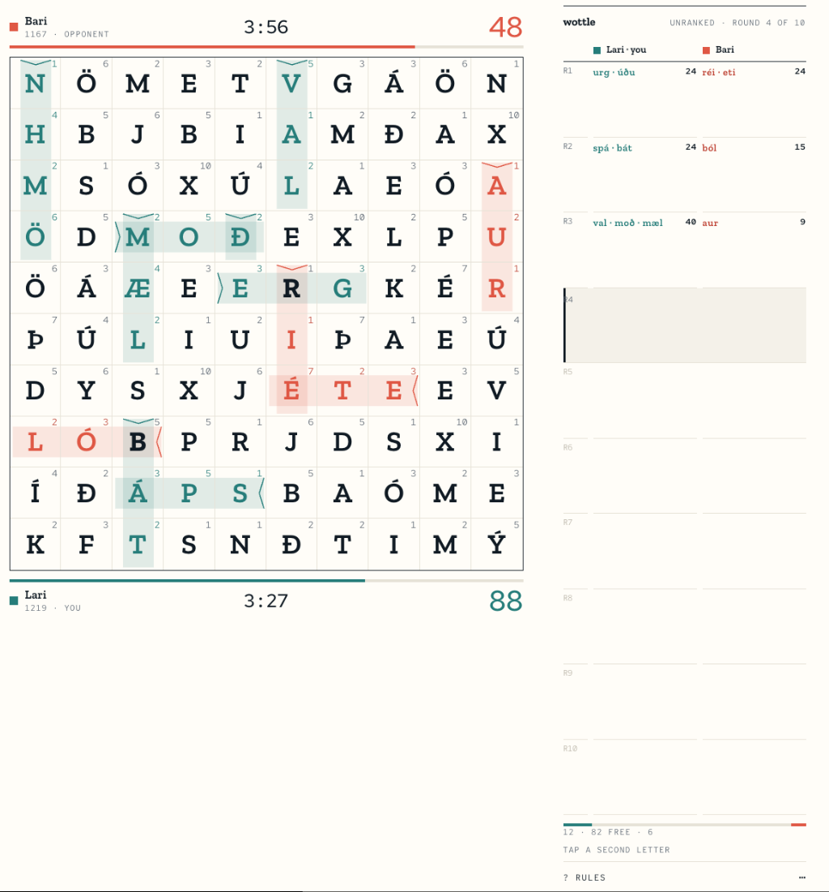

The Field & Ledger rebuild (spec 044) is structurally complete: one room, seat colours, bands with chevrons, the ledger, every state. Three paint defects in the field, a phone ledger sheet that is unwired and, as written, floats over the field and a handful of deviations stand between it and the design.
Read from source: components/room/*, lib/room/*, app/styles/room.css, app/globals.css, tailwind.config.ts, lib/constants/*, specs/044-field-ledger-redesign/*, tests/unit/**, tests/integration/ui/*, CLAUDE.md, README.md, docs/**. Companion: handoff/IMPLEMENTATION_REVIEW.md.
Every object the design asked for exists and is where it should be: Room measures the field with a ResizeObserver, PlayerBar carries the lane on its inner edge, FieldBands draws one tinted band and one chevron per word record from the reading direction, Ledger shares ten rows across its height and folds them, notices are live-row lines, colour is resolved through one seat function, the seven tokens and two fonts are the only ones declared, and the old components are gone from the tree. The reveal choreography, the disconnect line, the verdict block, the warm-up field, the placeholder queue and the profile on the room grid are all there.
What is not there is a rendered check. The task log records the Playwright suite and the reference screenshots as not run locally — no Supabase, and the unit tests run in JSDOM, which does not paint. As a result three defects shipped that any screenshot would have caught: the field's paper ground is hidden under its own rule colour (finding A1), the letter size never follows the cell size (A2), and the chevron is a 0.15px hairline (A3). Section 02 reproduces the field with the stylesheet as written.
Five of the design's open questions were decided by the team on 14 September (section 04). Three of those decisions change the design's copy and scale, and the implementation follows the decisions, not the documents. That is correct behaviour, and the design bundle should now be updated to match.
Both fixtures render the field at 360px, the width it gets on a 390px phone, from the rules in app/styles/room.css and the SVG in FieldBands.tsx. Left is the code as committed. Right paints the field paper and draws the rules as cell borders (as Fig. 2 does), declares --cell-size, and sets a 1.5px chevron stroke. Letter values are illustrative.
A: visible defects that make the room look unlike the design. B: implemented, but not as specified. C: specified, not implemented. D: correct, but left over from the previous look. E: process. File and line references are in the companion markdown.
Recorded in specs/044-field-ledger-redesign/spec.md (Decisions) and docs/prd_and_requirements/wottle_game_rules.md §2a, §3.1. None is a defect; each changes what the design bundle should say.
Order matters: R1 first, because nothing can be judged until the field paints; R6 last, because it is the check the others are measured by. Each step ends with the greps green, the unit suite green, and — from R6 on — the three reference screenshots attached to the PR.
The team took the review's recommendation on all three. They are binding for the completion (handoff R6, tasks T030–T032), not defaults.
Companion document with file and line references: handoff/IMPLEMENTATION_REVIEW.md. Design source: Wottle UX Audit.dc.html, Fig. 2–10.
The paint fixes landed. The field is paper with cell rules, letters and numerals scale from --cell-size, chevrons are 1.5px, the numeral floor holds, ledger words take --opp-text, the caption reads unranked · round 4 of 10. Bars, lanes (5:00 budgets at 79% and 69%), 14% bands with the numeral gutter clear, crossings and shared letters in ink 700 all match Fig. 2. Nine deviations remain: two structural (S1, S2), one in the data (S5), the rest detail.

Four changes the rendered room asks of the design itself. They are binding for the completion unless the team strikes one.
Handoff for this section: design_handoff_room_as_rendered/README.md and TASKS.md (spec 046). Earlier steps: design_handoff_field_ledger_completion/ (spec 045).